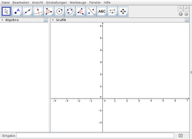

GeoGebra
Dieser Artikel wurde für die folgenden Ubuntu-Versionen getestet:
Ubuntu 14.04 Trusty Tahr
Zum Verständnis dieses Artikels sind folgende Seiten hilfreich:
GeoGebra  ist eine freie Geometriesoftware, mit der mathematische Objekte aus Geometrie, Algebra und Analysis gezeichnet werden können. Sie steht für Linux, Windows und Mac OS X zur Verfügung und setzt Java zwingend voraus.
ist eine freie Geometriesoftware, mit der mathematische Objekte aus Geometrie, Algebra und Analysis gezeichnet werden können. Sie steht für Linux, Windows und Mac OS X zur Verfügung und setzt Java zwingend voraus.
|  |
| Geogebra 5.x |
Einige Funktionen im Überblick:
Funktionsgraphen (inkl. Krümmung, Extrema, Wendepunkt, Tangenten, Asymptoten, Spiegelungen etc.)
Bestimmte Integrale sowie Stammfunktionen
Geraden und ihre Steigung, Halbgerade
Mittelpunkt, Mittelsenkrechte, Lote, Parallele, Winkelhalbierende
Fläche von beliebigen Polygonen und regelmäßigen Vielecken
Länge von Strecken, Größe von Winkeln
Kegelschnitte: Ellipse, Kreis, Pol und Polare
Kreissektoren, Kreisbögen, Umkreis
Vektoren, Normalenvektor
Rechnen mit komplexen Zahlen, Matrizen, Polynomen
Voraussetzungen¶
GeoGebra erfordert eine Java-Laufzeitumgebung (JRE), welche mindestens der Version 1.6 (Java 6) oder neuer entsprechen sollte.

Online-Nutzung¶
Statt der nachfolgend beschriebenen Installation auf dem eigenen Rechner kann man auch Java Web Start für Geogebra verwenden: geogebra-50.jnlp  (Version 5.0) oder geogebra.jnlp (Version 4.2). Damit die wiederholte Nutzung einfacher ist, wird ein Symbol auf dem Desktop erstellt, das das Programm aus dem Zwischenspeicher von Java offline startet.
(Version 5.0) oder geogebra.jnlp (Version 4.2). Damit die wiederholte Nutzung einfacher ist, wird ein Symbol auf dem Desktop erstellt, das das Programm aus dem Zwischenspeicher von Java offline startet.
Normalerweise nutzt man bei Java Web Start automatisch immer die letzte verfügbare Version eines Programms. Dies scheint im Fall von Geogebra nicht der Fall zu sein, da z.B. 4.4 die letzte Version der Reihe 4.x ist.
Installation¶
Das Programm ist in der Version 4 in den offiziellen Paketquellen enthalten. Folgendes Paket muss installiert [1] werden:
geogebra-gnome (an GNOME angepasste Version, auch für Xfce und LXDE)
 mit apturl
mit apturl
Paketliste zum Kopieren:
sudo apt-get install geogebra-gnome
sudo aptitude install geogebra-gnome
oder
geogebra-kde (an KDE angepasste Version)
mit apturl
Paketliste zum Kopieren:
sudo apt-get install geogebra-kde
sudo aptitude install geogebra-kde
Fremdpakete¶
Offizielle Fremdpakete sind vorhanden und können manuell heruntergeladen und installiert [2] werden.
Hinweis!
Fremdpakete können das System gefährden.
Anmerkung: Bei der Installation der Fremdpakete wird automatisch eine Paketquelle hinzugefügt. So ist gewährleistet, dass immer die aktuellste Version zur Verfügung steht.
Bedienung¶
Hilfe zur Bedienung findet man in der umfangreichen Hilfe im Programm (Taste
F1 ) oder im Wiki von GeoGebra .
Export¶
Möchte man Zeichnungen speichern und später erneut bearbeiten, kann man das GeoGebra-eigene Dateiformat .ggb über das Menü "Datei -> Speichern" verwenden. Zusätzlich bietet die Software noch umfangreiche Exportfunktionen:
"Datei -> Export -> Dynamisches Arbeitsblatt als Webseite (html)" speichert die Zeichnung in einer HTML-Seite mit eingebauten Java-Applet
"Datei -> Export -> Zeichenblatt als Bild (png, eps)" exportiert die Zeichnung wahlweise in ein PNG-Bild, eine PDF-Datei, eine SVG-Datei oder aber auch in eine Eps- oder Emf-Datei.
Problembehebung¶
OpenJDK¶
Das in Ubuntu enthaltene OpenJDK kann mit GeoGebra Probleme verursachen. Dann kann es helfen, die unfreie Alternative Oracle Java zu installieren. Der entscheidende Nachteil ist allerdings, dass man dann keine automatischen Aktualisierungen mehr erhält (OpenJDK wird als Bestandteil der offiziellen Paketquellen automatisch mit Updates versorgt).
Zwei unterschiedliche Versionen gleichzeitig nutzen¶
Möchte man zwei unterschiedliche Versionen von Geogebra parallel nebeneinander nutzen, so muss man zumindest eine der gewünschten Versionen manuell installieren. Speziell für diese Zwecke stehen portable Versionen  zur Verfügung.
zur Verfügung.
Diese müssen entpackt und entweder pro Benutzer in dessen Homeverzeichnis oder systemweit in den Ordner /opt/ kopiert werden. Außerdem muss pro Version noch ein eigener Programmstarter eingerichtet werden.
Links¶
Wiki
- Online-Dokumentationdeutsch Schnellstartanleitung
im PDF-Formatdeutsches Handbuch zu Version 3.0
im PDF-Format
GeoGebra - Wikipedia
- Erstellt mit Inyoka
-
 2004 – 2017 ubuntuusers.de • Einige Rechte vorbehalten
2004 – 2017 ubuntuusers.de • Einige Rechte vorbehalten
Lizenz • Kontakt • Datenschutz • Impressum • Serverstatus -
Serverhousing gespendet von